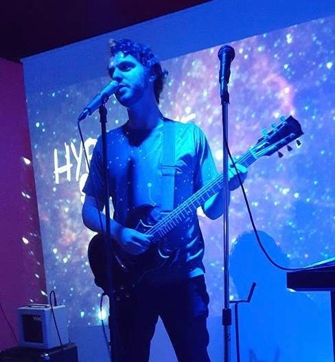
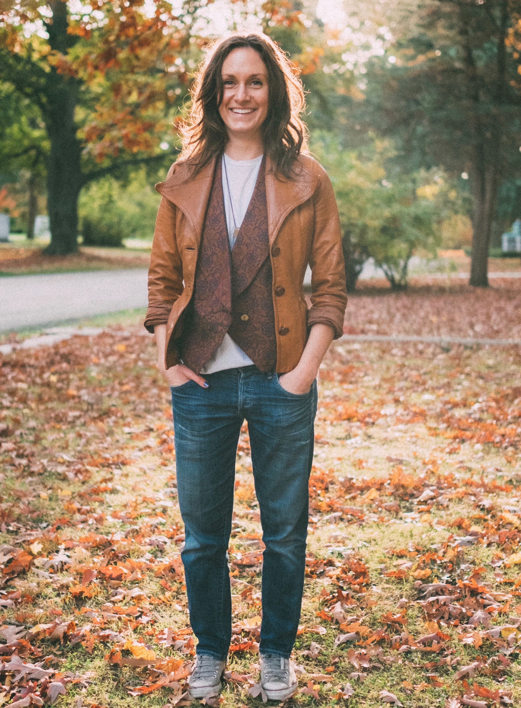

About the Filmmakers
On any given Wednesday, Andrew and Carol can be found in Andrew's apartment listening to obscure records, googling images of half-human beings and talking loudly.
With an admiration for Myazaki, Samurai Jack, Tim Burton, and analogue filmmaking, Andrew and Carol's approach to filmmaking is take a difficult idea, make it impossible, then ask all their friends to do it for free.
Born with the same brand of weird, their creative projects move forward in spite of their short attention-spans because they are supremely optimistic.
This is their first film together.

Andrew Shenkman
Andrew is a Toronto based writer, musician and multi-media artist who works primarily in children’s television. Andrew can often be found giving improvised musical performances, talking too loudly about movies and seeking out talented collaborators wherever they may be found. He is easily distracted by movement and/or brightly coloured materials and has recently completed all 7 seasons of The Gilmore Girls.
Find some of his work and inspirations here.

Carol Burbank
Carol's life is a performance currently in act V, or perhaps at intermission. Disability rights lawyer some of the time, film wardrober other times, and paper crafter all the time, Carol is best described by the facebook test that determined her spirit animal is a chameleon, if that chameleone suffers from crippling anxiety.
Often found vigorously dancing, lake swimming, bicycling long distances, making soups, gardening, and feeling-up natural fibers, Carol is incredibly proud of her shoe collection and owns a clothing library in Toronto.